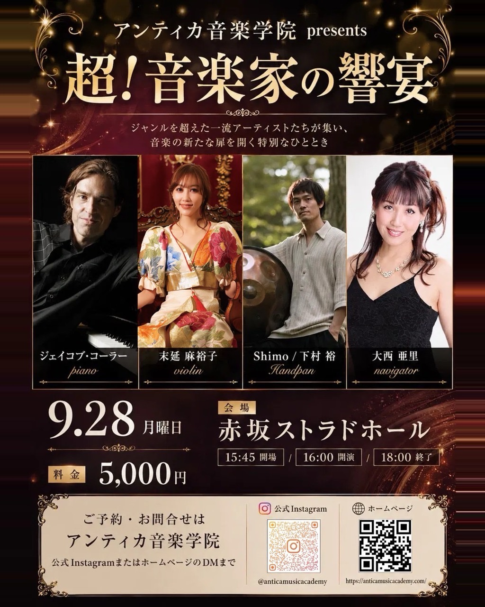

アンティカ音楽学院presents
『超！音楽家の響宴』
ジャンルを超えた一流アーティストたちが集い、音楽の新たな扉を開く特別なひととき。ご予約お急ぎ下さい‼︎

アンティカ音楽学院presents
『超！音楽家の響宴』
ご予約お急ぎ下さい‼︎
出演
- Pianoジェイコブ・コーラー
- Violin末延麻裕子
- HandpanShimo / 下村裕
- Navigator大西亜里
公演紹介
◆フジテレビ『ピアノ王決定戦』で優勝！YouTubeの総登録数61万人のアメリカ出身・超ピアニスト！
〝ジェイコブ・コーラー“
クラシックを礎に、ジャンルを超えた自由な表現で、唯一無二の音楽を奏でるヴァイオリニスト。
〝末延麻裕子“
avexデビュー『three1989』のメンバーでも活躍、ハンドパンの国内第一人者！
〝Shimo / 下村裕“
アンティカ音楽学院代表 シンガーソングライター
〝大西亜里“
開催概要
- 日程2026年9月28日（月）
- 時間15:30開場 / 16:00開演 / 17:30終演予定
- 会場赤坂ストラドホール
- ピアノクリムトの絵が描かれた世界希少なグランドピアノで奏でる
- 料金5,000円（全席自由・税込）
- 住所〒107-0052 東京都港区赤坂6-6-3 赤坂IDEAビル B1F
- アクセス東京メトロ千代田線「赤坂駅」より徒歩3分
- お問い合わせanticamusicacademy@gmail.com
ご予約・お問い合わせ
下記項目を記入のうえ、インスタDM、または anticamusicacademy@gmail.com までご予約をお願いいたします。
- 氏名
- お電話番号
- メールアドレス
- 本公演をどちらで知りましたか？（紹介者名、SNS、チラシ等）
アンティカ音楽学院
音楽文化で、社会をつなぐ。第一線で活躍する音楽家とともに、人・地域・企業を音楽文化でつなぐ新しい文化事業。
出演者プロフィール
ジェイコブ・コーラー piano
米国アリゾナ州・フェニックス生まれ。高校入学までにアリゾナ・ヤマハ・ピアノ・コンクールを含む10以上のクラシック・ピアノコンクールで優勝。2007年には「COLE PORTER JAZZ PIANO FELLOWSHIP」のファイナリストの一人に選ばれる。2009年来日後、ジャズ・ピアニストとしても活動。同年、星や月にまつわる名曲を集めた『STARS』、2010年4月にはジャジーにショパンをプレイして見せた『ショパンに恋して』がスマッシュヒット。2015年、人気テレビ番組「ピアノ王決定戦」で優勝。2023年6月現在、YouTubeのJacob Koller / The Mad Arrangerチャンネル登録数は30万人、Jacob Koller Japanチャンネル登録数は31万人を突破。
末延 麻裕子 violin
桐朋学園高校、桐朋学園大学研究科卒業。若い音楽家のためのチャイコフスキー国際コンクール・ディプロマ賞、第13回日本モーツァルトコンクール第2位。大阪フィル・東京フィルとの共演をはじめ、YOSHIKI、矢沢永吉ら多彩なアーティストとも共演。クラシックを軸に、ジャンルを超えた表現で多くの聴衆を魅了している。
Shimo / 下村裕 Handpan
THREE1989（スリー）のメンバーとしてキーボードを担当。ピアノ・ギター・ドラムと様々な楽器を演奏できる能力を活かし、楽曲面では主に編曲を担当している。個人的にヒーリング系・アンビエントのミュージックを好み、ハンドパンの不思議な音に魅了され2022年から始める。自身のテーマは「温もりのある安らかな音楽」で「自然との調和」を目的とし、音楽の表現の幅を広げ、活動している。
大西 亜里 navigator
国立音楽大学声楽学科卒業。桐蔭学園・慶應義塾高校教師時代に、音大同級生と結成した“アンティカ”として文化放送オーディションで2,000組からグランプリを受賞し、テレビ朝日AXEL主題歌「返事」でデビュー。テレビ「音革命」で桑名正博と司会を担当。2008年avexよりシンガーソングライターとしてソロデビュー。休業を経て2023年Billboard Live 東京の復帰公演で相田翔子、ダイアモンドユカイをゲストに迎え話題となる。2026年アンティカ音楽学院を創立し、作曲や音楽プロデュースへ活動を広げる。